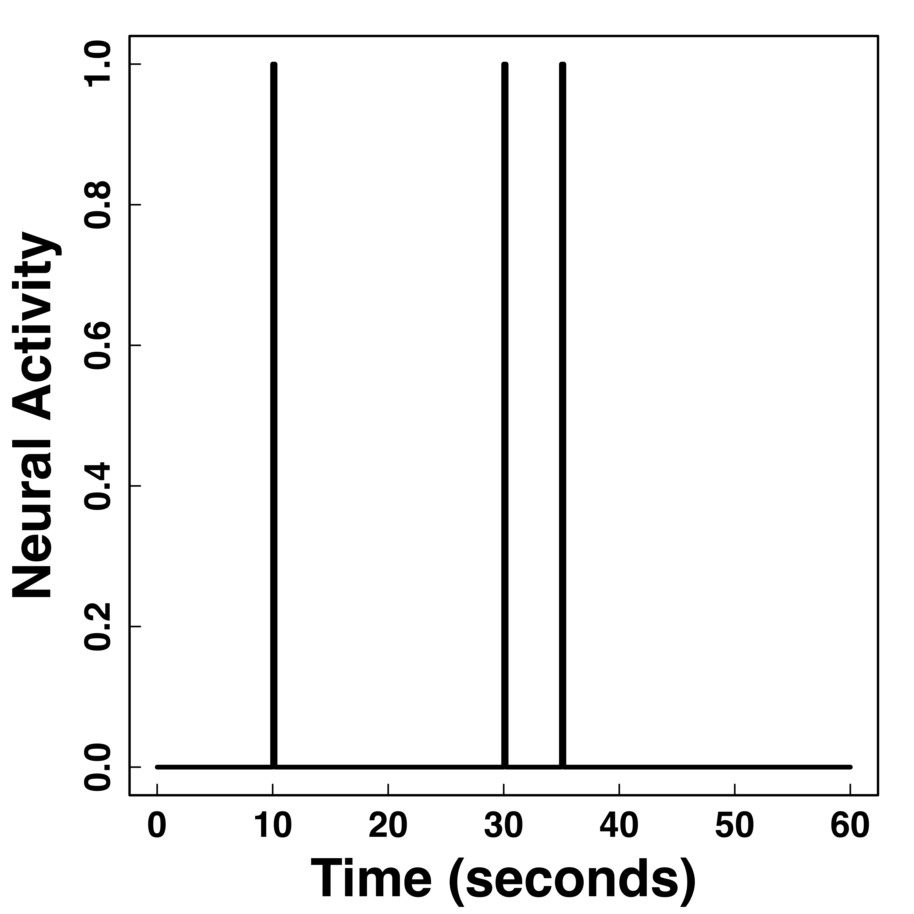
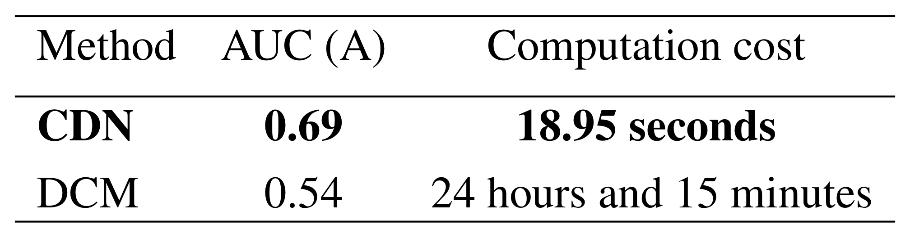
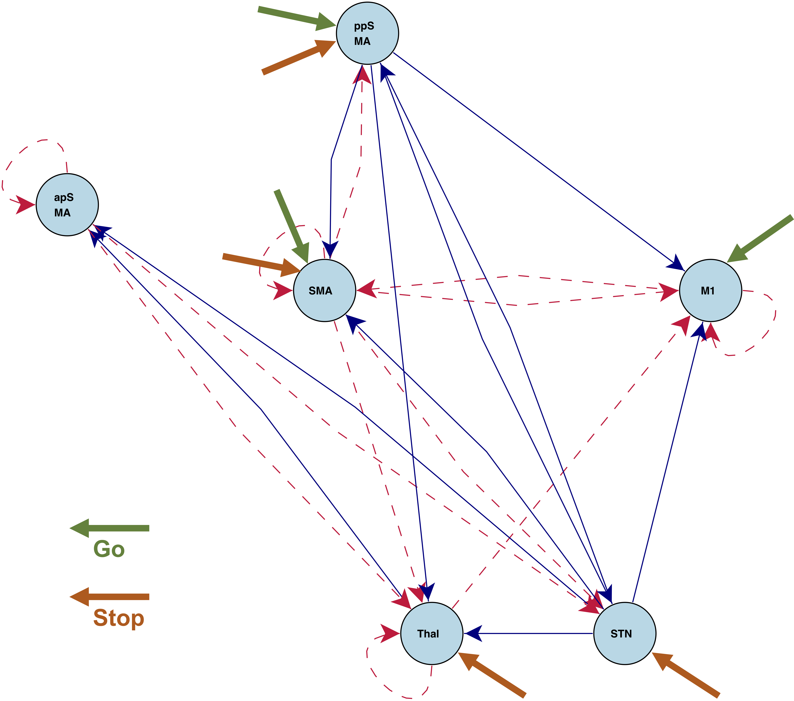
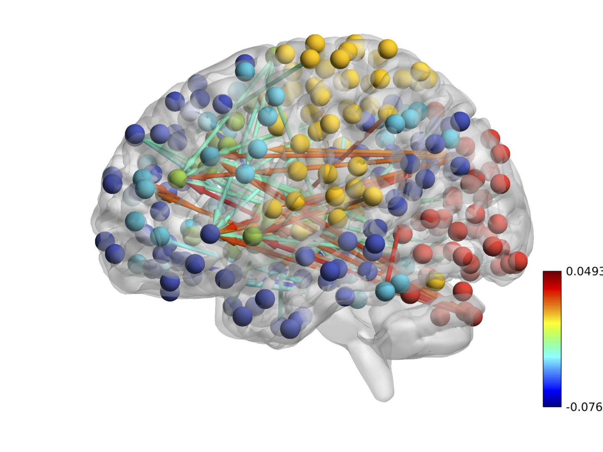

Causal Dynamic Networks : ODE Network Modeling of fMRI
Xi (Rossi) LUO
Department of Biostatistics
Center for Statistical Sciences
Computation in Brain and Mind
Brown Institute for Brain Science
Brown Data Science Initiative
ABCD Research Group

December 16, 2018
Funding: NIH R01EB022911, P20GM103645, P01AA019072, P30AI042853; NSF/DMS (BD2K) 1557467
Co-Authors
Xuefei Cao
Brown University
Bjorn Sandstede
Brown University
Slides viewable on web:
bit.ly /ibc1807
fMRI Experiments


- Task fMRI: performs tasks under brain scanning
-
Randomized stop/go task:- press button if "go";
- withhold pressing if "stop"
- Resting-state: "do nothing" during scanning

fMRI data: blood-oxygen-level dependent (BOLD) signals from each
Conceptual Model with Stimulus

Sci Goal: infer intrinsic connections,
Some Existing Methods and Limitions
- Functional (nondirectional) connectivity:
- Correlations
- PCA, independent component analysis (ICA) Calhoun, Guo, and colleagues
- Graphical models (inverse covariance)
- Effective (directional) connectivity:
- Granger causality, autoregressive modelsDing, Hu, Ombao, and colleagues
- Bayesian networks
- Limitations:biophysical interpretability $\propto$ scalability${}^{-1}$
- Fail to model task-depend connections/activations
- Connections unlikely to be causal/neuronal
- Some are hard to scale
Dynamic Causal Modeling (DCM)
- Proposed by Friston et al, 2003 (> 3000 citations)
- System approach to address previous limitations:
- Latent neuronal states: a
network ODE model - From neuronal states to observed BOLD signals: another ODE
- (Bayesian) priors for model parameters
- Bayes factor for comparing
a few candidate models
- Latent neuronal states: a

DCM: Advantages and Limitations
- Advantages:
Task -dependent,directional connectionsNeuronal/causal connections- Model brain activations (and non-stationary time series)
- Limitations:
- Computationally expensive
- Bayesian model comparison over exponentially many network models
- Model fitting depends on priors
- Hard to scale (for ~10 nodes), some successes for simplified models
- Mostly for hypothesis validation, not
data driven
Our CDN Model and Method
Causal Dynamic Networks
- A two-level model
- 1. DCM neuronal state model (latent $\bm{x}$, stimulus $\bm{u}$): $$\frac{d\bm{x}(t)}{dt}=\bm{A}\bm{x}(t)+\sum_{j}u_j(t)\bm{B_j}\bm{x}(t)+\bm{C}\bm{u}(t)$$
- 2. BOLD data model (data $\bm{y}$, noise $\bm{\epsilon}$): $$ \bm{y}(t_i) =\int h(s)\bm{x}(t_i-s) ds + \bm{\epsilon} (t_i) $$
- $\bm{A}$ intrinsic connection matrix, $\bm{B}$ task-dependent connection tensor, $\bm{C}$ stimulus activation matrix
Functional/Dynamic Data Analysis
- Usually, observed data $$ y(t) = x(t) + \epsilon(t) $$ and latent $x(t)$ follows an ODE model of interest
- Various approaches for estimating the ODE parameters: nonlinear least squares Xue, Miao, Wu, 10, two-stage smoothing Varah, 82, principal differential analysis Ramsey, 96, Bayesian Girolami, 08
- For example, two-stage smoothing approaches not directly applicable to BOLD
convolutions : $$ y(t) = \int x(t-u)h(u) du + \epsilon(t) $$
Hemodynamic Response Function (HRF)


fMRI responses last long (~30 seconds) after neural activities
"Smooth" BOLD far from neuronal activity
Method
- An optimization-based approach
- Minimize the following \[\begin{multline*} \scriptstyle l(\bm{x},\bm{\theta})=\sum_{t_i} \| \bm{y}(t_i)-h \star \bm{x}(t_i)) \|^2 \\ \scriptstyle +\lambda\int \left \| \frac{d \bm{x} (t) } {dt} - (A \bm{x}(t)+\sum_{j} u_j(t) \bm{B_j} \bm{x}(t)+ \bm{C}\bm{u}(t)) \right\|^2 dt \end{multline*} \]
- Balancing data fitting errors and ODE fitting errors
- Plug in basis-expansion of $\bm{x}(t) = \bm{\Gamma} \bm{\Phi}(t)$
- Allows convolution (vs two-stage smooth approach)
Algorithm
- Prove conditional convexity of $O(J d^2)$ parameters
- Iterative block coordinate descent algorithm
- Prove explicit update formulas (no numerical optimization algorithms needed)
Special Case: Resting-state fMRI
- Set our parameter $\bm{B}$ and $\bm{C}$ to zero
- Only fit intrinsic connection $\bm{A}$
- Can fit much larger networks
Simulations
Simulation: vs GCA/VAR

Our
Simulation: vs DCM
Our
Undering Neuronal States
Decent recovery of (latent) neuronal states
Task fMRI and Resting-state fMRI
Stop/Go fMRI
Brain activations and instrinsic connections between regions
Task Specific Connections
"Go" connections
"Stop" connections
Better understanding of brain mechanisms
Resting-state Connections

Ours (A) close to DCM (C), different from correaltions (B)
Real Data: 264 Brain Regions
CDN uncovers a
Discussion
- Joint optimization method for infer ODE networks
- Flexible models for observations from causal ODEs
- Computationally efficient for large-scale modeling
- PyPI pacakge:
cdn-fmri
Thank you!
Comments? Questions?
BigComplexData.com
or BrainDataScience.com